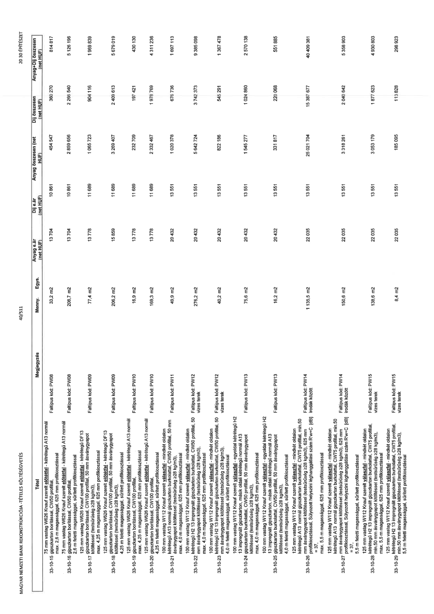

| Tétel | Megjegyzés | Menny. | Egys. | Anyag e.ár (net HUF) | Díj e.ár (net HUF) | Anyag összesen (net HUF) | Díj összesen (net HUF) | Anyag+Díj összesen (net HUF) |
|---|---|---|---|---|---|---|---|---|
| 33-10-15 | 75 mm vastag W626 Knauf szerelt előtétfal - kétrétegű A13 normál gipszkarton borítással, CW50 profillal, max. 2,6 m magassággal, 625 mm profilkiosztással. Faltípus kód: PW08 | 33,2 | m2 | 13 704 | 10 851 | 454 547 | 360 270 | 814 817 |
| 33-10-16 | 75 mm vastag W626 Knauf szerelt előtétfal - kétrétegű A13 normál gipszkarton borítással, CW50 profillal, 2,6 m feletti magassággal, sűrített profilkiosztással. Faltípus kód: PW08 | 208,7 | m2 | 13 704 | 10 851 | 2 859 656 | 2 265 540 | 5 125 196 |
| 33-10-17 | 125 mm vastag W626 Knauf szerelt előtétfal - kétrétegű DF13 gipszkarton borítással, CW100 profillal, 50 mm ásványgyapot kitöltéssel (testsűrűség ≥28 kg/m3), max. 4,25 m magassággal, 625 mm profilkiosztással. Faltípus kód: PW09 | 77,4 | m2 | 13 778 | 11 689 | 1 065 723 | 904 116 | 1 969 839 |
| 33-10-18 | 125 mm vastag W626 Knauf szerelt előtétfal - kétrétegű DF13 gipszkarton borítással, CW100 profillal, 50 mm ásványgyapot kitöltéssel (testsűrűség ≥28 kg/m3), 4,25 m feletti magassággal, sűrített profilkiosztással. Faltípus kód: PW09 | 206,2 | m2 | 15 859 | 11 689 | 3 269 407 | 2 409 613 | 5 679 019 |
| 33-10-19 | 125 mm vastag W626 Knauf szerelt előtétfal - kétrétegű A13 normál gipszkarton borítással, CW100 profillal, max. 4,25 m magassággal, 625 mm profilkiosztással. Faltípus kód: PW10 | 16,9 | m2 | 13 778 | 11 689 | 232 709 | 197 421 | 430 130 |
| 33-10-20 | 125 mm vastag W626 Knauf szerelt előtétfal - kétrétegű A13 normál gipszkarton borítással, CW100 profillal, 4,25 m feletti magassággal, sűrített profilkiosztással. Faltípus kód: PW10 | 169,3 | m2 | 13 778 | 11 689 | 2 332 467 | 1 978 769 | 4 311 236 |
| 33-10-21 | 100 mm vastag W112 Knauf szerelt válaszfal - mindkét oldalon kétrétegű A13 normál gipszkarton burkolattal, CW50 profillal, 50 mm ásványgyapot kitöltéssel (testsűrűség ≥28 kg/m3), max. 4,0 m magassággal, 625 mm profilkiosztással. Faltípus kód: PW11 | 49,9 | m2 | 20 432 | 13 551 | 1 020 378 | 676 735 | 1 697 113 |
| 33-10-22 | 100 mm vastag W112 Knauf szerelt válaszfal - mindkét oldalon kétrétegű H2 13 impregnált gipszkarton burkolattal, CW50 profillal, 50 mm ásványgyapot kitöltéssel (testsűrűség ≥28 kg/m3), max. 4,0 m magassággal, 625 mm profilkiosztással. Faltípus kód: PW12 vizes terek | 276,2 | m2 | 20 432 | 13 551 | 5 642 724 | 3 742 373 | 9 385 098 |
| 33-10-23 | 100 mm vastag W112 Knauf szerelt válaszfal - mindkét oldalon kétrétegű H2 13 impregnált gipszkarton burkolattal, CW50 profillal, 50 mm ásványgyapot kitöltéssel (testsűrűség ≥28 kg/m3), 4,0 m feletti magassággal, sűrített profilkiosztással. Faltípus kód: PW12 vizes terek | 40,2 | m2 | 20 432 | 13 551 | 822 186 | 545 291 | 1 367 478 |
| 33-10-24 | 100 mm vastag W112 Knauf szerelt válaszfal - egyoldal kétrétegű H2 13 impregnált gipszkarton, másik oldal kétrétegű normál A13 gipszkarton burkolattal, CW50 profillal, 50 mm ásványgyapot kitöltéssel (testsűrűség ≥28 kg/m3), max. 4,0 m magassággal, 625 mm profilkiosztással. Faltípus kód: PW13 | 75,6 | m2 | 20 432 | 13 551 | 1 545 277 | 1 024 860 | 2 570 138 |
| 33-10-25 | 100 mm vastag W112 Knauf szerelt válaszfal - egyoldal kétrétegű H2 13 impregnált gipszkarton, másik oldal kétrétegű normál A13 gipszkarton burkolattal, CW50 profillal, 50 mm ásványgyapot kitöltéssel (testsűrűség ≥28 kg/m3), 4,0 m feletti magassággal, sűrített profilkiosztással. Faltípus kód: PW13 | 16,2 | m2 | 20 432 | 13 551 | 331 817 | 220 068 | 551 885 |
| 33-10-26 | 125 mm vastag W112 Knauf szerelt válaszfal - mindkét oldalon kétrétegű A13 normál gipszkarton burkolattal, CW75 profillal, min. 50 mm ásványgyapot kitöltéssel (testsűrűség ≥28 kg/m3), 625 mm profilkiosztással, Súlyozott helyszíni léghanggátlási szám Rw=C [dB] = 37, max. 5,5 m magassággal, 625 mm profilkiosztással. Faltípus kód: PW14 irodák között | 1135,5 | m2 | 22 035 | 13 551 | 25 021 704 | 15 387 677 | 40 409 381 |
| 33-10-27 | 125 mm vastag W112 Knauf szerelt válaszfal - mindkét oldalon kétrétegű A13 normál gipszkarton burkolattal, CW75 profillal, min. 50 mm ásványgyapot kitöltéssel (testsűrűség ≥28 kg/m3), 625 mm profilkiosztással, Súlyozott helyszíni léghanggátlási szám Rw=C [dB] = 37, 5,5 m feletti magassággal, sűrített profilkiosztással. Faltípus kód: PW14 irodák között | 150,6 | m2 | 22 035 | 13 551 | 3 318 261 | 2 040 842 | 5 359 103 |
| 33-10-28 | 125 mm vastag W112 Knauf szerelt válaszfal - mindkét oldalon kétrétegű H2 13 impregnált gipszkarton burkolattal, CW75 profillal, min. 50 mm ásványgyapot kitöltéssel (testsűrűség ≥28 kg/m3), max. 5,5 m magassággal, 625 mm profilkiosztással. Faltípus kód: PW15 vizes terek | 138,6 | m2 | 22 035 | 13 551 | 3 053 179 | 1 877 623 | 4 930 803 |
| 33-10-29 | 125 mm vastag W112 Knauf szerelt válaszfal - mindkét oldalon kétrétegű H2 13 impregnált gipszkarton burkolattal, CW75 profillal, min. 50 mm ásványgyapot kitöltéssel (testsűrűség ≥28 kg/m3), 5,5 m feletti magassággal, sűrített profilkiosztással. Faltípus kód: PW15 vizes terek | 8,4 | m2 | 22 035 | 13 551 | 185 095 | 113 828 | 298 923 |
